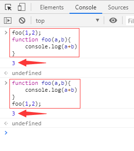
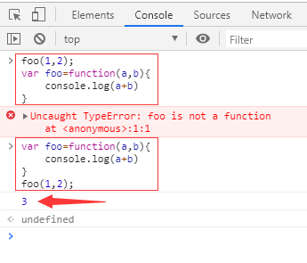
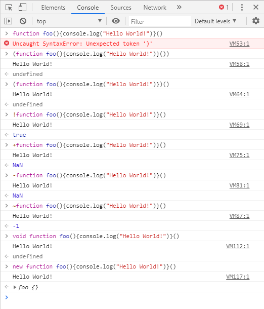
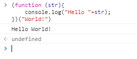
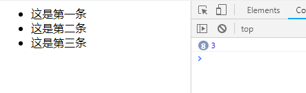
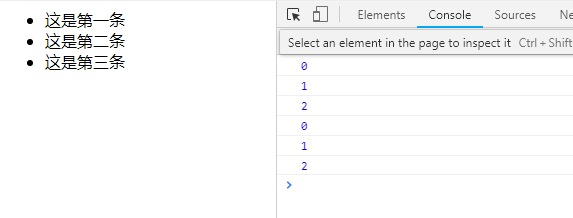

要知道这几种写法之间的区别，我们要先聊些题外话——js中函数的两种命名方式，即表达式和声明式。
函数的声明式写法为：function foo(){/*...*/}，这种写法会导致函数提升，所有function关键字都会被解释器优先编译，不管是声明在什么位置，都可以调用它，但是它本身不会被执行，定义只是让解释器知道其存在，只有在被调用的时候才会执行。

图1 声明式函数
函数的表达式写法为：var foo=function(){/*...*/}，这种写法不会导致函数提升，于是就必须先声明，再调用，否则会出错，如图2。

图2 表达式函数
现在，回到正题，(function(){}()),(function(){})()这两种是js中立即执行函数的写法，函数表达式后加上()可以被直接调用，但是把整个声明式函数用()包起来的话，则会被编译器认为是函数表达式，从而可以用()来直接调用，如(function foo(){/*...*/})()，但是如果这个括号加在声明式函数后面，如function foo(){/*...*/}()，则会报错，很多博客说这种写法()会被省略，但实际是会出错，因为不符合js的语法，所以想要通过浏览器的语法检查，就必须加点符号，比如()、+、!等，具体可以查看图3。

图3 立即执行函数
总结一下就是：
function foo(){console.log("Hello World!")}()//声明函数后加()会报错
(function foo(){console.log("Hello World!")}())//用括号把整个表达式包起来,正常执行
(function foo(){console.log("Hello World!")})()//用括号把函数包起来，正常执行
!function foo(){console.log("Hello World!")}()//使用！，求反，这里只想通过语法检查。
+function foo(){console.log("Hello World!")}()//使用+，正常执行
-function foo(){console.log("Hello World!")}()//使用-，正常执行
~function foo(){console.log("Hello World!")}()//使用~，正常执行
void function foo(){console.log("Hello World!")}()//使用void，正常执行
new function foo(){console.log("Hello World!")}()//使用new，正常执行立即执行函数一般也写成匿名函数，匿名函数写法为function(){/*...*/}，就是使用function关键字声明一个函数，但未给函数命名，倘若需要传值，直接将参数写到括号内即可如图4所示。

图4 立即执行函数的传参
将它赋予一个变量则创建函数表达式，赋予一个事件则成为事件处理程序等。但是需要注意的是匿名函数不能单独使用，否则会js语法报错，至少要用()包裹起来。上面的例子可以写成如下形式：
(function(){console.log("我是匿名函数。")}())
(function(){console.log("我是匿名函数。")})()
!function(){console.log("我是匿名函数。")}()
+function(){console.log("我是匿名函数。")}()
-function(){console.log("我是匿名函数。")}()
~function(){console.log("我是匿名函数。")}()
void function(){console.log("我是匿名函数。")}()
new function(){console.log("我是匿名函数。")}()
立即执行函数的作用是：1.创建一个独立的作用域，这个作用域里面的变量，外面访问不到，这样就可以避免变量污染。2.闭包和私有数据。提到闭包，不得不提下那道经典的闭包问题。
1 <ul id=”test”>
2 <li>这是第一条</li>
3 <li>这是第二条</li>
4 <li>这是第三条</li>
5 </ul>
6
7 <script>
8 var liList=document.getElementsByTagName('li');
9 for(var i=0;i<liList.length;i++)
10 {
11 liList[i].onclick=function(){
12 console.log(i);
13 }
14 };
15 </script>很多人觉得这样的执行效果是点击第一个li，则会输出1，点击第二个li，则会输出二，以此类推。但是真正的执行效果是，不管点击第几个li，都会输出3，如图5所示。因为 i 是贯穿整个作用域的，而不是给每个 li 分配了一个 i，用户触发的onclick事件之前，for循环已经执行结束了，而for循环执行完的时候i=3。

图5 各自点击第1，2，3个li，或是之后再次点了多少次，都会输出3，可见，右边控制台输出了8次3
但是如果我们用了立即执行函数给每个 li 创造一个独立作用域，就可以改写为下面的这样，这样就能实现点击第几条就能输出几的功能。
1 <script>
2 var liList=document.getElementsByTagName('li');
3 for(var i=0;i<liList.length;i++)
4 {
5 (function(ii) {
6 liList[ii].onclick=function(){
7 console.log(ii);
8 }
9 })(i)
10 };
11 </script>在立即执行函数执行的时候，i 的值被赋值给 ii，此后 ii 的值一直不变,如图6所示。i 的值从 0 变化到 3，对应3 个立即执行函数，这 3个立即执行函数里面的 ii 「分别」是 0、1、2。

图6 点击第几个li，就输出几
其实ES6语法中的let也可以实现上述的功能，仅仅是将for循环中的var换成let，如下所示，有木有觉得很简单明了。
1 <script>
2 var liList=document.getElementsByTagName('li');
3 for(let i=0;i<liList.length;i++)
4 {
5 liList[i].onclick=function(){
6 console.log(i);
7 }
8 }
9 </script>那很多人就觉得用let可以完全取代立即执行函数，到目前为止，可能是我眼界所限制，我所能用到的立即执行函数的确能被let替代，前提是你的运行环境（包括旧的浏览器）支持ES2015。如果不支持，你将不得不求助于以前经典的函数。